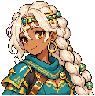

表情標籤：serious（劇本 18 句）｜台詞：「洛恩，從今天起，我站這裡。」 （mem:scarlet:5）
機械 QA 通過：magenta 殘留 0、半透明 0、碰邊 0（只允許底邊）、封閉洞 0｜對照 normal 通過：尺寸 108×115，normal 108×115（差 +0, +0），block 11／11，normal 色盤佔 100%
依角色分組。每張表情：已發佈的 normal 頭貼、新表情（原尺寸），再兩張 2× 像素放大；下面是它對應的表情標籤與一句實際會用到的台詞。全部由 codex 生成；還沒進遊戲（不在 public/），核准後才發佈。所有表情的 3× 總覽：montage.png。
表情標籤：serious（劇本 18 句）｜台詞：「洛恩，從今天起，我站這裡。」 （mem:scarlet:5）
機械 QA 通過：magenta 殘留 0、半透明 0、碰邊 0（只允許底邊）、封閉洞 0｜對照 normal 通過：尺寸 108×115，normal 108×115（差 +0, +0），block 11／11，normal 色盤佔 100%
表情標籤：sad（劇本 3 句）｜台詞：「我立誓守護的人，是公主殿下。她總是不讓我這樣叫她。」 （mem:scarlet:4）
機械 QA 通過：magenta 殘留 0、半透明 0、碰邊 0（只允許底邊）、封閉洞 0｜對照 normal 通過：尺寸 108×115，normal 108×115（差 +0, +0），block 11／11，normal 色盤佔 100%
表情標籤：vow（劇本 8 句）｜台詞：「凜小姐，請退後三步。這一次，誰也別想從他背後過去。」 （rin-confess）
機械 QA 通過：magenta 殘留 0、半透明 0、碰邊 0（只允許底邊）、封閉洞 0｜對照 normal 通過：尺寸 108×115，normal 108×115（差 +0, +0），block 11／11，normal 色盤佔 100%
表情標籤：shaken（劇本 5 句）｜台詞：「我轉身了。……在城門最需要我的時候，我逃了。」 （mem:scarlet:3）
機械 QA 通過：magenta 殘留 0、半透明 0、碰邊 0（只允許底邊）、封閉洞 0｜對照 normal 通過：尺寸 108×115，normal 108×115（差 +0, +0），block 11／11，normal 色盤佔 100%

表情標籤：serious（劇本 5 句）｜台詞：「道歉不必。但請容我，生氣一刻鐘。」 （banter:bobby-chizuru:2）
機械 QA 通過：magenta 殘留 0、半透明 0、碰邊 0（只允許底邊）、封閉洞 7｜對照 normal 通過：尺寸 127×123，normal 127×123（差 +0, +0），block 9／9，normal 色盤佔 100%｜警告：enclosed holes
表情標籤：sad（劇本 4 句）｜台詞：「封印……沒有念完。最後一句，凍在嘴裡了。」 （mem:chizuru:2）
機械 QA 通過：magenta 殘留 0、半透明 0、碰邊 0（只允許底邊）、封閉洞 13｜對照 normal 通過：尺寸 127×123，normal 127×123（差 +0, +0），block 9／9，normal 色盤佔 100%｜警告：enclosed holes
表情標籤：solemn（劇本 17 句）｜台詞：「洛恩大人，『站得起來嗎？』是活人對我說的第一句。鈴在此處，此處便是神社。謹以此段，奉於燈前。」 （finale）
機械 QA 通過：magenta 殘留 0、半透明 0、碰邊 0（只允許底邊）、封閉洞 13｜對照 normal 通過：尺寸 127×123，normal 127×123（差 +0, +0），block 9／9，normal 色盤佔 100%｜警告：enclosed holes
表情標籤：serious（劇本 11 句）｜台詞：「不用。松鼠，回樹上去。箭筒要滿，只剩一支的時候，什麼都護不住。」 （chat:sylvie:1）
機械 QA 通過：magenta 殘留 0、半透明 0、碰邊 0（只允許底邊）、封閉洞 1｜對照 normal 通過：尺寸 122×121，normal 122×121（差 +0, +0），block 10／10，normal 色盤佔 100%｜警告：enclosed holes
表情標籤：sad（劇本 4 句）｜台詞：「我沒守住。……林子死了，我還活著。」 （mem:sylvie:2）
機械 QA 通過：magenta 殘留 0、半透明 0、碰邊 0（只允許底邊）、封閉洞 0｜對照 normal 通過：尺寸 122×121，normal 122×121（差 +0, +0），block 10／10，normal 色盤佔 100%

表情標籤：sad（劇本 3 句）｜台詞：「凜，插在背後的那把刀……我早就看見了。是我一直沒有說出口。」 （mem:selene:5）
機械 QA 通過：magenta 殘留 0、半透明 0、碰邊 0（只允許底邊）、封閉洞 7｜對照 normal 通過：尺寸 123×114，normal 123×114（差 +0, +0），block 10／10，normal 色盤佔 100%｜警告：enclosed holes

表情標籤：wistful（劇本 8 句）｜台詞：「那個人的臉，我沒有看清楚。也許是我不敢看吧。」 （mem:selene:2）
機械 QA 通過：magenta 殘留 0、半透明 0、碰邊 0（只允許底邊）、封閉洞 11｜對照 normal 通過：尺寸 123×114，normal 123×114（差 +0, +0），block 10／10，normal 色盤佔 100%｜警告：enclosed holes


表情標籤：sad（劇本 7 句）｜台詞：「小洛，那座城……是我先看見的。」 （mem:safira:2）
機械 QA 通過：magenta 殘留 0、半透明 0、碰邊 0（只允許底邊）、封閉洞 4｜對照 normal 通過：尺寸 121×122，normal 121×122（差 +0, +0），block 9／9，normal 色盤佔 100%｜警告：enclosed holes

表情標籤：serious（劇本 2 句）｜台詞：「洛恩哥，那時候我沒敢問：祖先到底做錯了什麼？」 （mem:bobby:2）
機械 QA 通過：magenta 殘留 0、半透明 0、碰邊 0（只允許底邊）、封閉洞 4｜對照 normal 通過：尺寸 122×121，normal 122×121（差 +0, +0），block 10／10，normal 色盤佔 100%｜警告：enclosed holes
表情標籤：sad（劇本 5 句）｜台詞：「這些機兵，是我家的人造的。每修好一台，就像替祖先道一次歉。」 （mem:bobby:4）
機械 QA 通過：magenta 殘留 0、半透明 0、碰邊 0（只允許底邊）、封閉洞 1｜對照 normal 通過：尺寸 122×121，normal 122×121（差 +0, +0），block 10／10，normal 色盤佔 100%｜警告：enclosed holes

表情標籤：serious（劇本 2 句）｜台詞：「所以這一路，妳一直欠我們一句實話。我們背靠背打的時候，妳的刀朝著哪邊？」 （rin-confess）
機械 QA 通過：magenta 殘留 0、半透明 0、碰邊 0（只允許底邊）、封閉洞 1｜對照 normal 通過：尺寸 102×121，normal 102×121（差 +0, +0），block 10／10，normal 色盤佔 100%｜警告：enclosed holes
表情標籤：sad（劇本 3 句）｜台詞：「帽子留在門後了。說好了，回家再戴。」 （mem:liz:3）
機械 QA 通過：magenta 殘留 0、半透明 0、碰邊 0（只允許底邊）、封閉洞 1｜對照 normal 通過：尺寸 102×121，normal 102×121（差 +0, +0），block 10／10，normal 色盤佔 100%｜警告：enclosed holes
表情標籤：hushed（劇本 8 句）｜台詞：「可是揉我頭髮的那個人，臉是一片霧。」 （mem:liz:1）
機械 QA 通過：magenta 殘留 0、半透明 0、碰邊 0（只允許底邊）、封閉洞 1｜對照 normal 通過：尺寸 102×121，normal 102×121（差 +0, +0），block 10／10，normal 色盤佔 100%｜警告：enclosed holes


表情標籤：sad（劇本 2 句）｜台詞：「老師不教我，不是小氣，是怕我把自己燒光。」 （mem:noel:4）
機械 QA 通過：magenta 殘留 0、半透明 0、碰邊 0（只允許底邊）、封閉洞 2｜對照 normal 通過：尺寸 118×119，normal 118×119（差 +0, +0），block 10／10，normal 色盤佔 100%｜警告：enclosed holes